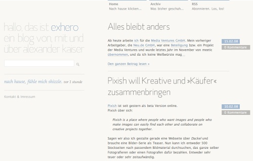
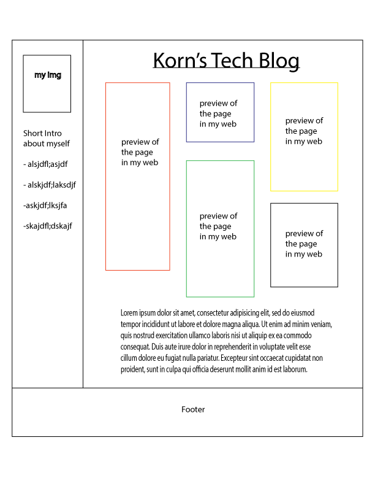

Planning my Index.html
Main functions of my GitHub page:
Landing page for my GitHub
Making first impression
For user to be able to navigate to other pages
Introduce what this site is about
Theme

So I went looking for a cool blog design/theme and found this one to be very simple yet at the same time very elegant. So I decided to use this theme.
However, the final outlook would not look like this for couple of reasons as you will see in the wireframe.
Wireframe

The top main menu will not be able to hold all of my pages. So I want a list instead on side of the page.
The articles are seperate from the index.html so there will only be a linkable image preview of them.